أنبوب الأشعة السينية (التجربة 3)X-ray Tube — Third Experiment in Practice
عملي · م02 · 12.3 دقيقةأقسام المحاضرة (9)
- مكوّنات أنبوب الأشعة والكاثودX-ray Tube Components & Cathode
- الفتيلة وكأس التركيزFilament & Focusing Cup
- الأنود والهدفAnode & Target
- فوائد التنغستن كمادة للهدفThe Benefits Of Using Tungsten As A Target Material
- مبدأ البؤرة الخطيةLine Focus Principle
- تأثير الكعبAnode Heel Effect
- الغلاف الزجاجي والغطاء الواقيGlass Envelope & Protective Housing
- أسباب تعطّل الأنبوب وأعطاله الشائعةTube Failure: Common Causes & Faults
- العناية بأنبوب الأشعةCare of the X-ray Tube
مكوّنات أنبوب الأشعة والكاثودX-ray Tube Components & Cathode
X – Ray tube consists of four major components:
يتكوّن أنبوب الأشعة السينية من أربعة مكوّنات رئيسية:
- 1. Cathodeالكاثود
- 2. Anodeالأنود
- 3. Glass Envelopeالغلاف الزجاجي
- 4. Protective housingالغطاء الواقي
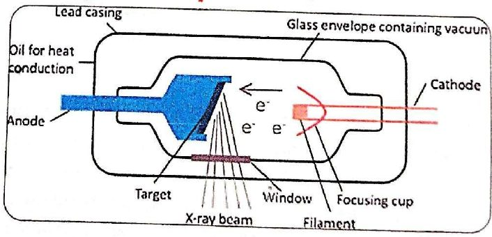
الكاثودcathode
The cathode is the negative side of the x-ray tube because it is a source of electrons and has two primary parts: filament & focusing cup .
الكاثود هو الجانب السالب من أنبوب الأشعة لأنه مصدر الإلكترونات، وله جزءان رئيسيان: الفتيلة وكأس التركيز.
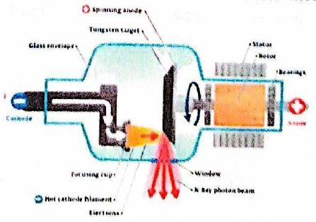
الفتيلة وكأس التركيزFilament & Focusing Cup
- • The filament is a small coil of wire (2 mm in diameter and 1-2 cm long) located in the cathode of the X-ray tube.الفتيلة ملف سلكي صغير (قطره 2 مم وطوله 1–2 سم) موجود في كاثود أنبوب الأشعة.
- • When a high electric current (about 4 A or more) passes through it, the filament becomes very hot and releases electrons through a process called thermionic emission.عند مرور تيار كهربائي عالٍ (نحو 4 أمبير أو أكثر) فيها تسخن الفتيلة كثيراً وتطلق الإلكترونات بعملية تُسمّى الانبعاث الحراري للإلكترونات.
- • Filaments are made of thoriated tungsten because:تُصنع الفتائل من التنغستن المُضاف إليه الثوريوم للأسباب الآتية:
- 1. Tungsten has an extremely high melting point (3410°C)للتنغستن درجة انصهار عالية جداً (3410 درجة مئوية).
- 2. It does not vaporize easily, preventing tube damageلا يتبخّر بسهولة، فيمنع تلف الأنبوب.
- 3. Adding 1-2% thorium improves electron emission and increases tube lifeإضافة 1–2% ثوريوم تحسّن انبعاث الإلكترونات وتطيل عمر الأنبوب.
Most X-ray tubes contain dual filaments (Only one filament operates at a time and small focal spot is superimposed over the large):
أغلب أنابيب الأشعة فيها فتيلتان (تعمل واحدة فقط في كل مرة، والبؤرة الصغيرة تنطبق فوق الكبيرة):
- • Small filament → produces a small focal spot used for imaging small body partsالفتيلة الصغيرة ← تنتج بؤرة صغيرة لتصوير أجزاء الجسم الصغيرة.
- • Large filament → produces a large focal spot for larger body parts and higher mAالفتيلة الكبيرة ← تنتج بؤرة كبيرة لأجزاء الجسم الأكبر وmA أعلى.
The mA setting determines how many electrons are released:
إعداد الملي أمبير (mA) يحدّد عدد الإلكترونات المنطلقة:
- • Low mA → fewer electrons → fewer X-raysmA منخفض ← إلكترونات أقل ← أشعة سينية أقل.
- • High mA → more electrons → more X-raysmA عالٍ ← إلكترونات أكثر ← أشعة سينية أكثر.
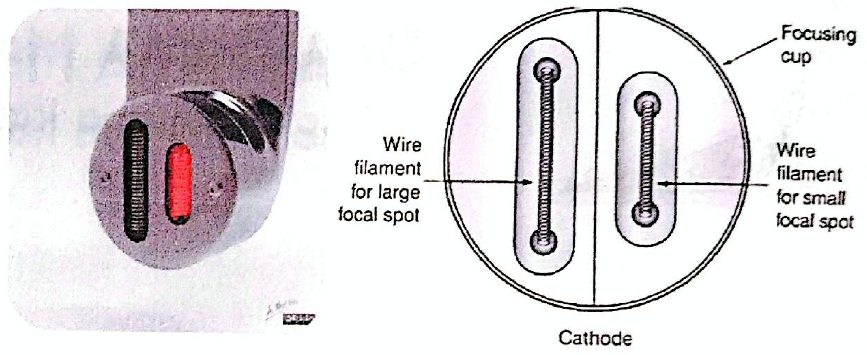
كأس التركيز والشحنة الفراغيةFocusing Cup & Space Charge
- • The focusing cup is a metal structure surrounding the filament in the X-ray tube.كأس التركيز تركيب معدني يحيط بالفتيلة في أنبوب الأشعة.
- • When the machine is powered, the filament heats up and releases electrons through thermionic emission.عند تشغيل الجهاز تسخن الفتيلة وتطلق الإلكترونات بالانبعاث الحراري.
- • These electrons form a cloud around the filament called the space charge.هذه الإلكترونات تكوّن سحابة حول الفتيلة تُسمّى الشحنة الفراغية.
- • When exposure begins, the electrons accelerate rapidly toward the anode.عند بدء التعرّض تتسارع الإلكترونات بسرعة نحو الأنود.
- • Why do we need the Focusing Cup? Because electrons are negatively charged, they naturally spread out due to electrostatic repulsion. and The focusing cup is also negatively charged, which forces the electrons into a narrow, concentrated stream.لماذا نحتاج كأس التركيز؟ لأن الإلكترونات سالبة الشحنة فهي تتباعد طبيعياً بسبب التنافر الكهروستاتيكي، وكأس التركيز سالب الشحنة أيضاً فيجبر الإلكترونات على أن تكون تياراً ضيّقاً مركّزاً.
- • This ensures the electrons hit a specific area on the anode known as the focal spotهذا يضمن أن تضرب الإلكترونات منطقة محدّدة على الأنود تُسمّى البؤرة.
- • The filament operates on a low-voltage, high-current circuit (about 4-6 A).الفتيلة تعمل على دائرة منخفضة الجهد عالية التيار (نحو 4–6 أمبير).
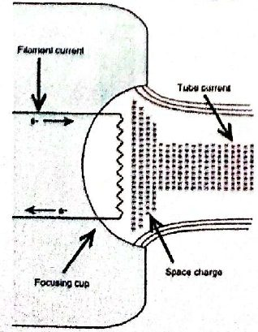
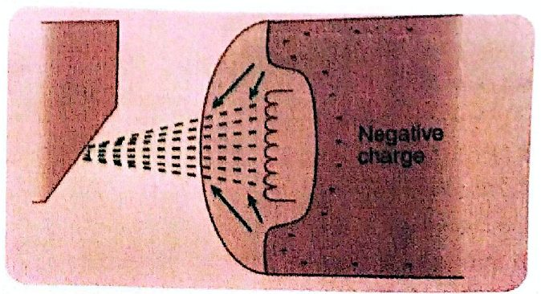
الأنود والهدفAnode & Target
- • The anode is the positive side of the X-ray tube.الأنود هو الجانب الموجب من أنبوب الأشعة.
- • Its function is to receive electrons from the cathode and convert their kinetic energy into X-rays and heat.وظيفته استقبال الإلكترونات من الكاثود وتحويل طاقتها الحركية إلى أشعة سينية وحرارة.
أنواع الأنودTypes of Anodes :
- • Stationary Anode : 1- Used in dental units, portable machines, and low-power X-ray systems . 2-Does not rotate. 3-Limited heat capacity. 4-Target is a tungsten alloy embedded in a copper anodeالأنود الثابت: 1- يُستعمل في أجهزة الأسنان والأجهزة المحمولة والأنظمة منخفضة القدرة. 2- لا يدور. 3- سعته الحرارية محدودة. 4- الهدف سبيكة تنغستن مغروسة في أنود نحاسي.
- • Rotating Anode : 1- Used in general-purpose X-ray tubes. 2- Allows production of high-intensity X-ray beams.الأنود الدوّار: 1- يُستعمل في أنابيب الأشعة متعددة الأغراض. 2- يسمح بإنتاج حزم أشعة عالية الشدة.
- • The anode disc rotates at : (3,200 rpm under standard techniques) or (>5,000 rpm at high exposure settings)قرص الأنود يدور بسرعة: (3,200 دورة/دقيقة بالتقنيات القياسية) أو (أكثر من 5,000 دورة/دقيقة بإعدادات التعرّض العالية).
- • Rotation spreads heat over a large area, preventing damage and enabling more X-ray output.الدوران يوزّع الحرارة على مساحة كبيرة، فيمنع التلف ويسمح بناتج أشعة أكثر.
الهدفTarget
- • The target is the area of the anode struck by electrons.الهدف هو منطقة الأنود التي تضربها الإلكترونات.
- • In stationary anodes → the target is a tungsten alloy insert.في الأنود الثابت ← الهدف قطعة سبيكة تنغستن مُدخَلة.
- • In rotating anodes → the entire rotating disc acts as the target.في الأنود الدوّار ← القرص الدوّار كله يعمل هدفاً.
- • Tungsten is alloyed with rhenium to provide : additional mechanical strength especially under high rotational stress.يُخلط التنغستن مع الرينيوم ليعطي قوة ميكانيكية إضافية، خصوصاً تحت إجهاد الدوران العالي.
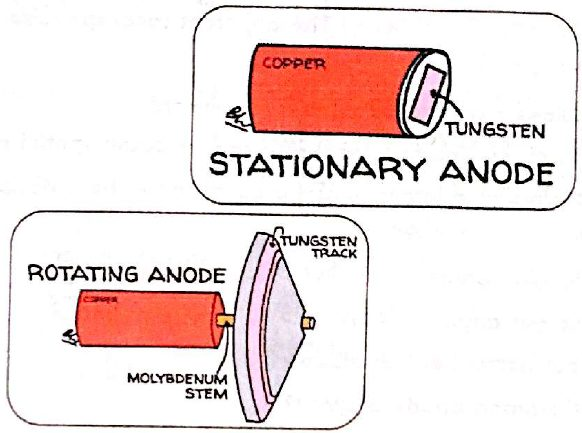
فوائد التنغستن كمادة للهدفThe Benefits Of Using Tungsten As A Target Material
- 1. High Atomic Number (74) : Produces X-rays more efficiently. and Generates higher-energy X-raysعدد ذري عالٍ (74): ينتج الأشعة السينية بكفاءة أعلى، ويولّد أشعة أعلى طاقة.
- 2. High Thermal Conductivity: Nearly equal to copper. and Helps dissipate heat quickly and prevents damage to the anode.توصيل حراري عالٍ: يقارب النحاس، ويساعد على تبديد الحرارة بسرعة ويمنع تلف الأنود.
- 3. Very High Melting Point (3410°C) : Allows tungsten to withstand extremely high tube currents and Prevents melting, pitting, or bubbling of the target surfaceدرجة انصهار عالية جداً (3410°م): تسمح للتنغستن بتحمّل تيارات أنبوب عالية جداً، وتمنع انصهار سطح الهدف أو تنقّره أو تفقّعه.
- 4. Resists Vaporization : Minimizes metal evaporation even at high temperatures.and Prevents contamination and extends tube lifeيقاوم التبخّر: يقلّل تبخّر المعدن حتى في درجات الحرارة العالية، ويمنع التلوّث ويطيل عمر الأنبوب.
- 5. Cost-Effective and Widely Available : Tungsten is accessible and economical for manufacturing X-ray targetsاقتصادي ومتوفّر: التنغستن متاح واقتصادي لصناعة أهداف الأشعة السينية.
ملاحظة إضافيةAdditional Note
- 1. Over 99% of the electron energy becomes heat, not X-rays.أكثر من 99% من طاقة الإلكترونات يصبح حرارة، لا أشعة سينية.
- 2. Therefore, the anode must be an excellent heat conductor.لذلك يجب أن يكون الأنود موصلاً ممتازاً للحرارة.
لماذا تكون المسافة قصيرة بين الكاثود والأنود؟Why a short distance between cathode and anode?
- 1. To keep the electron beam tightly focused.لإبقاء حزمة الإلكترونات مركّزة بإحكام.
- 2. Prevents electrons from spreading due to electrostatic repulsion.تمنع تباعد الإلكترونات بسبب التنافر الكهروستاتيكي.
- 3. Ensures efficient and concentrated X-ray productionتضمن إنتاجاً كفوءاً ومركّزاً للأشعة السينية.
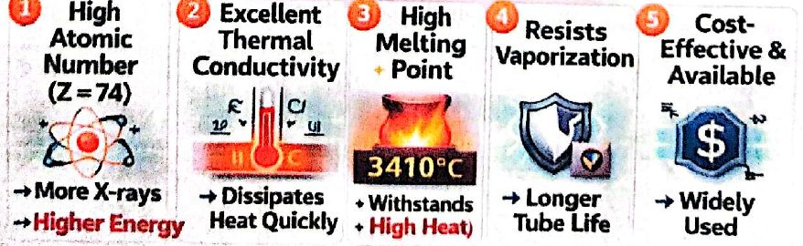
مبدأ البؤرة الخطيةLine Focus Principle
The line focus principle states that angling the anode target makes the effective focal spot (EFS) appear smaller than the actual focal spot (AFS), improving image sharpness while maintaining heat capacity.
مبدأ البؤرة الخطية ينص على أن إمالة هدف الأنود تجعل البؤرة الفعّالة (EFS) تبدو أصغر من البؤرة الفعلية (AFS)، فتتحسّن حدّة الصورة مع الحفاظ على السعة الحرارية.
أنواع البؤرةFocal Spot Types
- • Actual Focal Spot : The true area on the anode struck by electronsالبؤرة الفعلية: المساحة الحقيقية على الأنود التي تضربها الإلكترونات.
- • Effective Focal Spot : The apparent focal spot size as seen from the image receptor, determined by the anode angleالبؤرة الفعّالة: حجم البؤرة الظاهري كما يُرى من مستقبِل الصورة، وتحدّده زاوية الأنود.
لماذا يكون الأنود مائلاً؟Why the Anode is Angled?
- 1. Allows x-rays to be emitted downwardيسمح بانبعاث الأشعة نحو الأسفل.
- 2. Reduces effective focal spot size → better spatial resolution.يصغّر البؤرة الفعّالة ← دقة مكانية أفضل.
- 3. Maintains a larger actual area → better heat dissipation.يحافظ على مساحة فعلية أكبر ← تبديد أفضل للحرارة.
تأثير زاوية الأنودEffect of Anode Angle ?
- 1. Smaller angle → smaller EFS → sharper imageزاوية أصغر ← بؤرة فعّالة أصغر ← صورة أوضح.
- 2. Larger angle → larger EFS → less sharp image but better heat distributionزاوية أكبر ← بؤرة فعّالة أكبر ← صورة أقل وضوحاً لكن توزيع حرارة أفضل.
- 3. Common anode angle: 12°.زاوية الأنود الشائعة: 12 درجة.
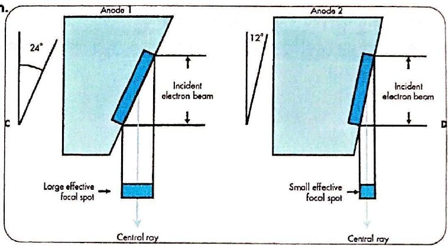
تأثير الكعبAnode Heel Effect
is a variation in x-ray beam intensity caused by absorption of x-rays within the anode target material.
تأثير كعب الأنود هو تفاوت في شدة حزمة الأشعة سببه امتصاص الأشعة داخل مادة هدف الأنود.
- • Cathode side = higher intensity (stronger beam).جهة الكاثود = شدة أعلى (حزمة أقوى).
- • Anode side = lower intensity (weaker beam).جهة الأنود = شدة أقل (حزمة أضعف).
تأثير زاوية الأنودEffect of Anode Angle
- • Smaller anode angle → smaller effective focal spot → larger heel effect.زاوية أنود أصغر ← بؤرة فعّالة أصغر ← تأثير كعب أكبر.
- • Larger anode angle → larger effective focal spot → reduced heel effect.زاوية أنود أكبر ← بؤرة فعّالة أكبر ← تأثير كعب أقل.
الاستعمال السريريClinical Use
Position the cathode side over the denser anatomy, where greater beam penetration is needed.
ضع جهة الكاثود فوق الجزء الأكثف من الجسم، حيث نحتاج اختراقاً أكبر للحزمة.
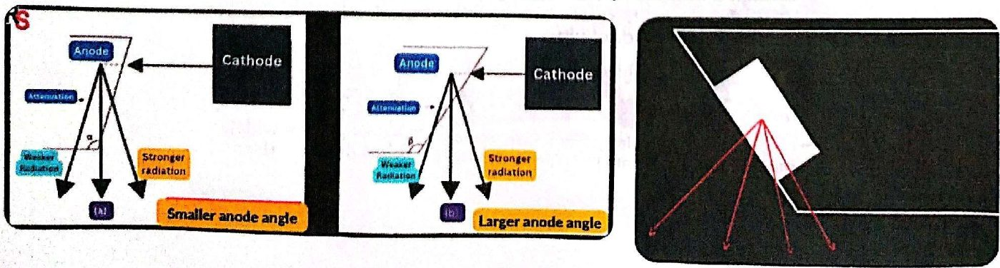
الغلاف الزجاجي والغطاء الواقيGlass Envelope & Protective Housing
The tube envelope houses and supports the internal components of the x-ray tube, including the anode and cathode. It is typically made of Pyrex glass or metal and maintains a vacuum
غلاف الأنبوب يضمّ المكوّنات الداخلية لأنبوب الأشعة ويسندها، ومنها الأنود والكاثود. ويُصنع عادةً من زجاج البايركس أو المعدن، ويحافظ على الفراغ.
أهمية الفراغImportance of the Vacuum
- 1. Ensures free movement of electrons from cathode to anode and Increases x-ray production efficiencyيضمن حركة حرة للإلكترونات من الكاثود إلى الأنود، ويزيد كفاءة إنتاج الأشعة.
- 2. Reduces heat and Extends tube lifeيقلّل الحرارة ويطيل عمر الأنبوب.
If the tube contained gas, electron flow would decrease and heat would increase.
لو احتوى الأنبوب على غاز لقلّ تدفّق الإلكترونات وزادت الحرارة.
الغلاف الزجاجي مقابل المعدنيGlass vs. Metal Envelope :
- 1. Glass Envelope : Traditionally used and Over time → tungsten vapor can coat the glass → Alters electric potential → causes arcing and Leads to tube failureالغلاف الزجاجي: يُستعمل تقليدياً، ومع الوقت ← بخار التنغستن قد يغطّي الزجاج ← يغيّر الجهد الكهربائي ← يسبّب التقوّس الكهربائي ويؤدي إلى تعطّل الأنبوب.
- 2. Metal Envelope : Maintains stable electric potential → Prevents arcing → Longer tube lifeالغلاف المعدني: يحافظ على جهد كهربائي ثابت ← يمنع التقوّس ← عمر أطول للأنبوب.
Tube Window : A thin section (~5 cm²) of the envelope through which the useful x-ray beam exits.It allows maximum x-ray emission with minimal absorption.
نافذة الأنبوب: جزء رقيق (~5 سم²) من الغلاف تخرج منه حزمة الأشعة المفيدة. تسمح بأقصى انبعاث للأشعة مع أقل امتصاص.
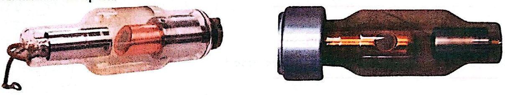
الغطاء الواقيProtective Housing
The x-ray tube is enclosed in a lead-lined protective housing designed to control major hazards and ensure safe operation.
أنبوب الأشعة محاط بغطاء واقٍ مبطّن بالرصاص، مصمّم للسيطرة على المخاطر الرئيسية وضمان التشغيل الآمن.
وظائف الغطاء الواقيFunctions of the Protective Housing :
- 1. Radiation Protection : - Prevents leakage radiation - Ensures x-rays exit only through the designated window - Protects patients and operators from unnecessary exposureالوقاية من الإشعاع: يمنع الإشعاع المتسرّب، ويضمن خروج الأشعة من النافذة المخصّصة فقط، ويحمي المرضى والعاملين من التعرّض غير الضروري.
- 2. Electrical Safety : - Shields users from high voltages generated by the tube - Prevents electric shockالسلامة الكهربائية: يحمي المستخدمين من الجهد العالي الذي يولّده الأنبوب، ويمنع الصدمة الكهربائية.
- 3. Mechanical Support : - Protects the tube from physical damage - Stabilizes the tube during operationالإسناد الميكانيكي: يحمي الأنبوب من التلف المادي، ويثبّته أثناء التشغيل.
- 4. Heat Management : - Housing often contains insulating oil that absorbs heat and acts as an electrical insulator and Some housings include a cooling fan to cool the oil and the tubeإدارة الحرارة: يحتوي الغطاء غالباً زيتاً عازلاً يمتص الحرارة ويعمل عازلاً كهربائياً، وبعض الأغطية فيها مروحة تبريد لتبريد الزيت والأنبوب.
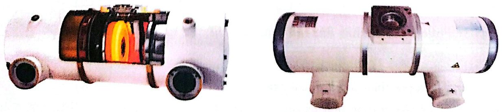
أسباب تعطّل الأنبوب وأعطاله الشائعةTube Failure: Common Causes & Faults
الأسباب الشائعة لتعطّل الأنبوبCOMMON CAUSES OF TUBE FAILURE
- 1. Extremely high voltageجهد عالٍ جداً
- 2. Excessive heat generationتوليد حرارة مفرطة
- 3. Poor cooling systemنظام تبريد ضعيف
- 4. Rough-handling/ Carelessالتعامل الخشن / الإهمال
- 5. Agingالتقادم
الأعطال الشائعة وأسبابها وعلاجها — 1- تشقّق غطاء الأنبوبCOMMON FAULTS, THEIR CAUSES & REMEDY — 1- Cracking of x-ray tube housing
- • Causes : Expansion of air & oil present inside it and increased in its internal pressure.الأسباب: تمدّد الهواء والزيت داخله وزيادة ضغطه الداخلي.
- • Results : 1- Escape of oil from the housing. 2- Insulation level & cooling rate are reduced.النتائج: 1- تسرّب الزيت من الغطاء. 2- انخفاض مستوى العزل ومعدّل التبريد.
- • Remedy : Excluding air and Use of metal bellows to allow oil expansion as well as to operate as “microswitchالعلاج: إخراج الهواء، واستعمال منفاخ معدني يسمح بتمدّد الزيت ويعمل أيضاً كمفتاح دقيق (microswitch).
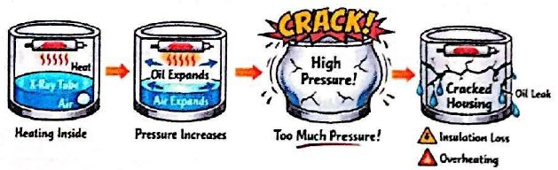
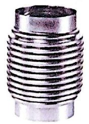
2- تسرّب الإشعاع2- Radiation Leakage
- • Causes : Cracking or damage to the X-ray tube housing · Improper or inadequate shielding.الأسباب: تشقّق غطاء الأنبوب أو تلفه، أو تدريع غير صحيح أو غير كافٍ.
- • Results: Increases the radiation dose for both the patient and the personnel. · Leakage radiation should not exceed 100 mR/hr.النتائج: يزيد جرعة الإشعاع للمريض والعاملين. ويجب ألا يتجاوز الإشعاع المتسرّب 100 ملّي رونتجن/ساعة.
- • Remedy : Repair or apply proper shielding immediately. · Replace the entire X-ray tube unit as soon as possible.العلاج: الإصلاح أو وضع تدريع مناسب فوراً، واستبدال وحدة الأنبوب كاملة بأسرع وقت.
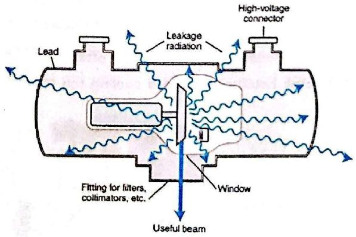
أعطال الغلاف والفتيلة والأنودEnvelope, Filament & Anode Faults
3- فشل الغلاف الزجاجي/المعدني (فقدان الفراغ)3- Glass/Metal Envelope Failure (Loss of Vacuum)
- • Causes : Crazing of the glass enclosure due to difference in coefficients of expansion of glass and metal.الأسباب: تشقّق سطحي دقيق (تشعّر) في الغلاف الزجاجي بسبب اختلاف معاملات تمدّد الزجاج والمعدن.
- • Results : Production of secondary electrons · the variation in the number, reduced speed of electrons impinging on the target, energy of x-ray produced · Production couldn't be controlled independently.النتائج: إنتاج إلكترونات ثانوية، وتفاوت في عدد الإلكترونات الضاربة للهدف ونقص سرعتها وطاقة الأشعة المنتجة، ولا يمكن التحكّم بالإنتاج بشكل مستقل.
- • Remedy : Use of special alloys having the same coefficients of linear expansion as Pyrex glass is used.العلاج: استعمال سبائك خاصة لها معاملات التمدّد الطولي نفسها لزجاج البايركس.
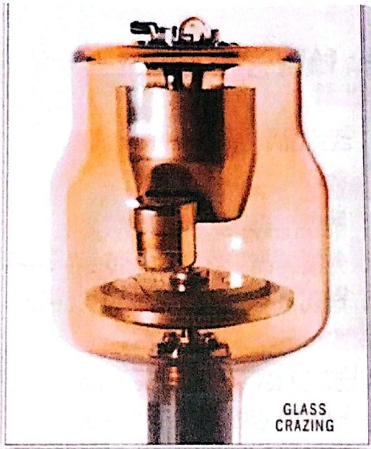
4- أعطال الفتيلة (تبخّر الفتيلة)4- FAULTS IN FILAMENT (Vaporization of filament).
- • Causes : Excessive heating of filament for the longer period of time.الأسباب: تسخين مفرط للفتيلة لمدة طويلة.
- • Results : The vaporization of filament or breakage of filament lead to no exposure takes place.النتائج: تبخّر الفتيلة أو انكسارها يؤدي إلى عدم حدوث تعرّض.
- • Remedy : Use of 1-2 % Thorium with tungsten filament.العلاج: استعمال 1–2% ثوريوم مع فتيلة التنغستن.
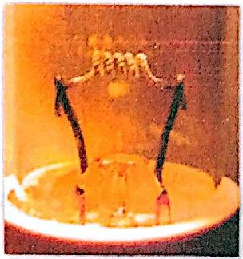
5- أعطال الأنود: أ. التواء مادة الهدف5 - FAULTS IN ANODE : A. Kinking of the target material
- • Causes : Difference in thermal expansion of metal on the surface & metal immediately beneath the surface.الأسباب: اختلاف التمدّد الحراري بين المعدن على السطح والمعدن تحته مباشرةً.
- • Results: Results in distortion of the anode angle, narrowing of the beam, greater geometric unsharpness.النتائج: تشوّه زاوية الأنود، وتضيّق الحزمة، وزيادة عدم الحدّة الهندسي.
- • Remedy : 10% Rhenium is added to 90% of tungsten target. · Manufacture anode disc with slits in the target surface to allow the material in the focal track to expand without producing the mechanical tensionالعلاج: إضافة 10% رينيوم إلى 90% تنغستن في الهدف، وصناعة قرص الأنود بشقوق في سطح الهدف تسمح لمادة المسار البؤري بالتمدّد دون إجهاد ميكانيكي.
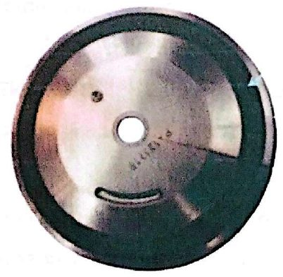
5- أعطال الأنود: تخشّن سطح الأنود وتنقّره5 - FAULTS IN ANODE : Roughening and pitting of anode surface
- • Causes : Excessive thermal stress.الأسباب: إجهاد حراري مفرط.
- • Results : Scattering of the x-rays · Absorption of x-rays by the target itself. · Results in diminish x-ray output.النتائج: تشتّت الأشعة، وامتصاص الهدف نفسه للأشعة، فيقلّ ناتج الأشعة.
- • Remedy : Use of lowest necessary power · Largest possible focal spot · Longer exposures at reduced power.العلاج: استعمال أقل قدرة لازمة، وأكبر بؤرة ممكنة، وتعرّضات أطول بقدرة أقل.
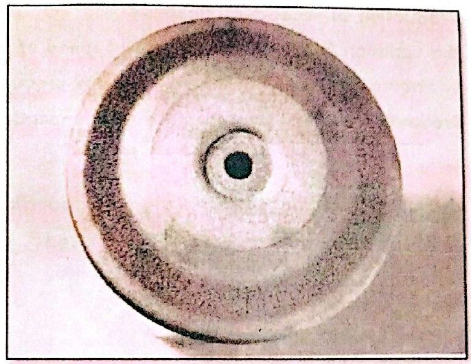
العناية بأنبوب الأشعةCare of the X-ray Tube
- 1. Warm up the anode if the system was off for ≥ 2 hours to prevent thermal shock.سخّن الأنود إذا كان الجهاز مطفأً ساعتين أو أكثر، لمنع الصدمة الحرارية.
- 2. Minimize filament boost time because long boost reduces filament life.قلّل زمن تعزيز (تسخين) الفتيلة، لأن التعزيز الطويل يقصّر عمر الفتيلة.
- 3. USE LOWER TUBE CURRENT (mA)استعمل تيار أنبوب (mA) أقل.
- • High tube current will cause evaporation of the tungsten.تيار الأنبوب العالي يسبّب تبخّر التنغستن.
- • Whenever possible, use a lower mA station and a longer exposure time to arrive at the desired mAs.كلما أمكن، استعمل mA أقل وزمن تعرّض أطول للوصول إلى قيمة mAs المطلوبة.
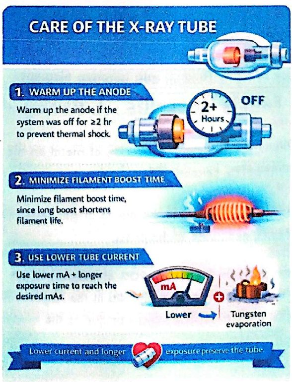
المحاضرة مسموعة
نص الأستاذ بالإنكليزي مثل الأصل · 12.3 دقيقة. اضغط أي جملة تسمعها، أو مصطلح منقّط تسمع لفظه ومعناه.
X-ray Tube Components & Cathodeمكوّنات أنبوب الأشعة والكاثود
X-ray Tube Components & Cathode
X – Ray tube consists of four major components:
Cathode
Anode
Glass Envelope
Protective housing
cathode
The cathode is the negative side of the x-ray tube because it is a source of electrons and has two primary parts: filament & focusing cup .
Filament & Focusing Cupالفتيلة وكأس التركيز
Filament & Focusing Cup
The filament is a small coil of wire (2 mm in diameter and 1-2 cm long) located in the cathode of the X-ray tube.
When a high electric current (about 4 A or more) passes through it, the filament becomes very hot and releases electrons through a process called thermionic emission.
Filaments are made of thoriated tungsten because:
Tungsten has an extremely high melting point (3410°C)
It does not vaporize easily, preventing tube damage
Adding 1-2% thorium improves electron emission and increases tube life
Most X-ray tubes contain dual filaments (Only one filament operates at a time and small focal spot is superimposed over the large):
Small filament → produces a small focal spot used for imaging small body parts
Large filament → produces a large focal spot for larger body parts and higher mA
The mA setting determines how many electrons are released:
Low mA → fewer electrons → fewer X-rays
High mA → more electrons → more X-rays
Focusing Cup & Space Charge
The focusing cup is a metal structure surrounding the filament in the X-ray tube.
When the machine is powered, the filament heats up and releases electrons through thermionic emission.
These electrons form a cloud around the filament called the space charge.
When exposure begins, the electrons accelerate rapidly toward the anode.
Why do we need the Focusing Cup? Because electrons are negatively charged, they naturally spread out due to electrostatic repulsion. and The focusing cup is also negatively charged, which forces the electrons into a narrow, concentrated stream.
This ensures the electrons hit a specific area on the anode known as the focal spot
The filament operates on a low-voltage, high-current circuit (about 4-6 A).
Anode & Targetالأنود والهدف
Anode & Target
The anode is the positive side of the X-ray tube.
Its function is to receive electrons from the cathode and convert their kinetic energy into X-rays and heat.
Types of Anodes :
Stationary Anode : 1- Used in dental units, portable machines, and low-power X-ray systems . 2-Does not rotate. 3-Limited heat capacity. 4-Target is a tungsten alloy embedded in a copper anode
Rotating Anode : 1- Used in general-purpose X-ray tubes. 2- Allows production of high-intensity X-ray beams.
The anode disc rotates at : (3,200 rpm under standard techniques) or (>5,000 rpm at high exposure settings)
Rotation spreads heat over a large area, preventing damage and enabling more X-ray output.
Target
The target is the area of the anode struck by electrons.
In stationary anodes → the target is a tungsten alloy insert.
In rotating anodes → the entire rotating disc acts as the target.
Tungsten is alloyed with rhenium to provide : additional mechanical strength especially under high rotational stress.
The Benefits Of Using Tungsten As A Target Materialفوائد التنغستن كمادة للهدف
The Benefits Of Using Tungsten As A Target Material
High Atomic Number (74) : Produces X-rays more efficiently. and Generates higher-energy X-rays
High Thermal Conductivity: Nearly equal to copper. and Helps dissipate heat quickly and prevents damage to the anode.
Very High Melting Point (3410°C) : Allows tungsten to withstand extremely high tube currents and Prevents melting, pitting, or bubbling of the target surface
Resists Vaporization : Minimizes metal evaporation even at high temperatures.and Prevents contamination and extends tube life
Cost-Effective and Widely Available : Tungsten is accessible and economical for manufacturing X-ray targets
Additional Note
Over 99% of the electron energy becomes heat, not X-rays.
Therefore, the anode must be an excellent heat conductor.
Why a short distance between cathode and anode?
To keep the electron beam tightly focused.
Prevents electrons from spreading due to electrostatic repulsion.
Ensures efficient and concentrated X-ray production
Line Focus Principleمبدأ البؤرة الخطية
Line Focus Principle
The line focus principle states that angling the anode target makes the effective focal spot (EFS) appear smaller than the actual focal spot (AFS), improving image sharpness while maintaining heat capacity.
Focal Spot Types
Actual Focal Spot : The true area on the anode struck by electrons
Effective Focal Spot : The apparent focal spot size as seen from the image receptor, determined by the anode angle
Why the Anode is Angled?
Allows x-rays to be emitted downward
Reduces effective focal spot size → better spatial resolution.
Maintains a larger actual area → better heat dissipation.
Effect of Anode Angle ?
Smaller angle → smaller EFS → sharper image
Larger angle → larger EFS → less sharp image but better heat distribution
Common anode angle: 12°.
Anode Heel Effectتأثير الكعب
Anode Heel Effect
is a variation in x-ray beam intensity caused by absorption of x-rays within the anode target material.
Cathode side = higher intensity (stronger beam).
Anode side = lower intensity (weaker beam).
Effect of Anode Angle
Smaller anode angle → smaller effective focal spot → larger heel effect.
Larger anode angle → larger effective focal spot → reduced heel effect.
Clinical Use
Position the cathode side over the denser anatomy, where greater beam penetration is needed.
Glass Envelope & Protective Housingالغلاف الزجاجي والغطاء الواقي
Glass Envelope & Protective Housing
The tube envelope houses and supports the internal components of the x-ray tube, including the anode and cathode. It is typically made of Pyrex glass or metal and maintains a vacuum
Importance of the Vacuum
Ensures free movement of electrons from cathode to anode and Increases x-ray production efficiency
Reduces heat and Extends tube life
If the tube contained gas, electron flow would decrease and heat would increase.
Glass vs. Metal Envelope :
Glass Envelope : Traditionally used and Over time → tungsten vapor can coat the glass → Alters electric potential → causes arcing and Leads to tube failure
Metal Envelope : Maintains stable electric potential → Prevents arcing → Longer tube life
Tube Window : A thin section (~5 cm²) of the envelope through which the useful x-ray beam exits.It allows maximum x-ray emission with minimal absorption.
Protective Housing
The x-ray tube is enclosed in a lead-lined protective housing designed to control major hazards and ensure safe operation.
Functions of the Protective Housing :
Radiation Protection : - Prevents leakage radiation - Ensures x-rays exit only through the designated window - Protects patients and operators from unnecessary exposure
Electrical Safety : - Shields users from high voltages generated by the tube - Prevents electric shock
Mechanical Support : - Protects the tube from physical damage - Stabilizes the tube during operation
Heat Management : - Housing often contains insulating oil that absorbs heat and acts as an electrical insulator and Some housings include a cooling fan to cool the oil and the tube
Tube Failure: Common Causes & Faultsأسباب تعطّل الأنبوب وأعطاله الشائعة
Tube Failure: Common Causes & Faults
COMMON CAUSES OF TUBE FAILURE
Extremely high voltage
Excessive heat generation
Poor cooling system
Rough-handling/ Careless
Aging
COMMON FAULTS, THEIR CAUSES & REMEDY — 1- Cracking of x-ray tube housing
Causes : Expansion of air & oil present inside it and increased in its internal pressure.
Results : 1- Escape of oil from the housing. 2- Insulation level & cooling rate are reduced.
Remedy : Excluding air and Use of metal bellows to allow oil expansion as well as to operate as “microswitch
2- Radiation Leakage
Causes : Cracking or damage to the X-ray tube housing · Improper or inadequate shielding.
Results: Increases the radiation dose for both the patient and the personnel. · Leakage radiation should not exceed 100 mR/hr.
Remedy : Repair or apply proper shielding immediately. · Replace the entire X-ray tube unit as soon as possible.
Envelope, Filament & Anode Faults
3- Glass/Metal Envelope Failure (Loss of Vacuum)
Causes : Crazing of the glass enclosure due to difference in coefficients of expansion of glass and metal.
Results : Production of secondary electrons · the variation in the number, reduced speed of electrons impinging on the target, energy of x-ray produced · Production couldn't be controlled independently.
Remedy : Use of special alloys having the same coefficients of linear expansion as Pyrex glass is used.
4- FAULTS IN FILAMENT (Vaporization of filament).
Causes : Excessive heating of filament for the longer period of time.
Results : The vaporization of filament or breakage of filament lead to no exposure takes place.
Remedy : Use of 1-2 % Thorium with tungsten filament.
5 - FAULTS IN ANODE : A. Kinking of the target material
Causes : Difference in thermal expansion of metal on the surface & metal immediately beneath the surface.
Results: Results in distortion of the anode angle, narrowing of the beam, greater geometric unsharpness.
Remedy : 10% Rhenium is added to 90% of tungsten target. · Manufacture anode disc with slits in the target surface to allow the material in the focal track to expand without producing the mechanical tension
5 - FAULTS IN ANODE : Roughening and pitting of anode surface
Causes : Excessive thermal stress.
Results : Scattering of the x-rays · Absorption of x-rays by the target itself. · Results in diminish x-ray output.
Remedy : Use of lowest necessary power · Largest possible focal spot · Longer exposures at reduced power.
Care of the X-ray Tubeالعناية بأنبوب الأشعة
Care of the X-ray Tube
Warm up the anode if the system was off for ≥ 2 hours to prevent thermal shock.
Minimize filament boost time because long boost reduces filament life.
USE LOWER TUBE CURRENT (mA)
High tube current will cause evaporation of the tungsten.
Whenever possible, use a lower mA station and a longer exposure time to arrive at the desired mAs.
39 سؤال من نص المحاضرة، ويّا «ليش صح» بعد كل جواب.
ابدأ الاختباراضغط أي مصطلح منقّط تسمع لفظه ومعناه.
PDF ثنائي اللغة: نص الأستاذ + الترجمة + الخلاصة + الأسئلة · 1.8 MB
تحميل الملف